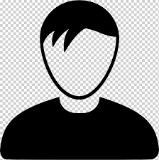

Добро пожаловать на мой сайт!
Привет, я Франциск, и я рад приветствовать вас на моем личном сайте. Я путешественник, фотограф и блогер, и я создал этот сайт, чтобы поделиться своими приключениями и опытом с вами.
Последние статьи
-
Моя поездка в Париж
Читать больше -
Мои любимые места в Риме
Читать больше -
Моя поездка в Барселону
Читать больше
Цели моего сайта
Моя цель - поделиться своими приключениями и опытом с вами, чтобы вдохновить вас на путешествия и открытия новых мест.
Я также хочу создать сообщество путешественников, где мы можем делиться своими историями и советами.
Обо мне
Меня зовут Франциск, и я путешественник и фотограф. С раннего возраста я мечтал о путешествиях и открытии новых мест. Я посетил более 15 стран и каждое из них оставило незабываемые впечатления.
Моя страсть к путешествиям началась, когда я в 18 лет я отправился в свое первое самостоятельное путешествие в Европу. С тех пор я не останавливаюсь на достигнутом и всегда ищу новые приключения.
Мои интересы в путешествиях
Я люблю исследовать новые культуры, пробовать местную кухню и знакомиться с новыми людьми. Мои любимые виды путешествий включают:
- Пешеходные походы в горах
- Путешествия на байдарках и каяках
- Культурные поездки и экскурсии
- Фотографические экспедиции
Я также увлекаюсь историей и шахматами.
Советы для путешественников
Полезные советы по подготовке к поездке
- Исследование места назначения: Узнайте о культуре и обычаях.
- Создание списка вещей: Не забудьте важные вещи.
- Проверка погоды: Узнайте о погодных условиях.
- Бронирование жилья и транспорта: Делайте это заранее.
- Проверка документов: Убедитесь, что все документы в порядке.
Информация о визах, страховках и т.д.
- Визы: Узнайте о требованиях для въезда.
- Медицинская страховка: Оформите страховку на время поездки.
- Страховка от отмены поездки: Рассмотрите возможность оформления.
- Иммунизация и прививки: Убедитесь, что все прививки сделаны.
- Контакты посольства: Запишите контактные данные посольства.
Советы по бюджету и экономии
- Составление бюджета: Определите, сколько готовы потратить.
- Поиск выгодных предложений: Используйте сайты для сравнения цен.
- Путешествие вне сезона: Рассмотрите возможность поездки в межсезонье.
- Пользуйтесь общественным транспортом: Экономьте деньги и изучайте культуру.
- Пробуйте местную еду: Уличная еда часто дешевле и вкуснее.
- Бесплатные мероприятия: Ищите бесплатные экскурсии и достопримечательности.
Галерея путешествий
Исследуйте мир через мои фотографии. Здесь вы найдете моменты из наших путешествий, которые вдохновят вас на новые приключения!
Контакты
Подписка на рассылку.